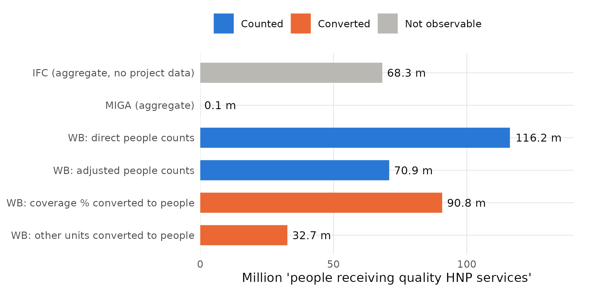
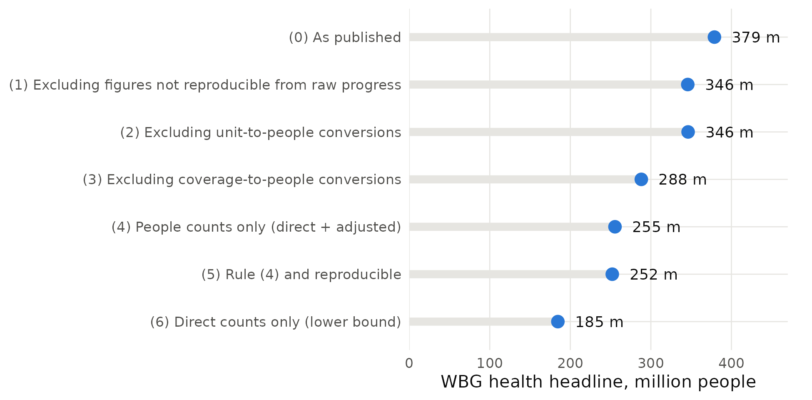
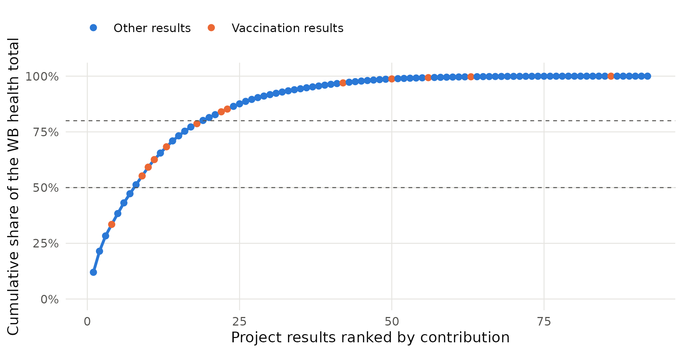
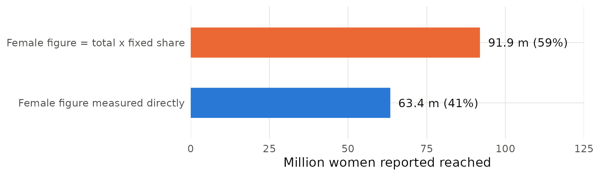

Ashu Arora*
Abstract. How many people did the World Bank Group’s health operations reach? The Group’s FY24–FY30 Scorecard answers with a single number: 378.9 million people received quality health, nutrition and population services by June 2025. Using the public project-level records behind that number, I reconcile it exactly to 92 World Bank project results plus IFC and MIGA aggregates and decompose it by how each figure was produced. Only 37% of the World Bank total is a direct count of people. 29% comes from coverage percentages multiplied by population bases—overwhelmingly COVID-19 vaccination rates—and 11% from converting outpatient visits, facilities and cases into people; 33.1 million cannot be reproduced from the published progress values. Restricting the count to people actually counted lowers the headline by a third, to 255 million. The total is concentrated: ten results supply 59% of it. 59% of the 155 million women reported reached are the total multiplied by an assumed share of about one half. Health results are 44 percentage points more likely than other Scorecard results to be rescaled. The health workforce appears in 15 of 1,131 Scorecard projects. The findings argue for reporting effective coverage and publishing how each figure is constructed.
JEL codes: I15, I18, F35, O19, H43
Keywords: results measurement; universal health coverage; effective coverage; development statistics; World Bank; gender data
*Ashu Arora is an independent researcher [affiliation, address and email to be added]. [Acknowledgements to be added.] The data are public; replication files (Stata and R) are available at [repository link] and will be deposited with the journal. The findings, interpretations and conclusions are the author’s own.
Development institutions increasingly summarise their work in a few headline numbers. The World Bank Group’s Scorecard for FY24–FY30 replaced roughly 150 indicators with 22 results indicators and was presented as a shift toward measuring outcomes rather than inputs (World Bank 2024a, 2024b). In health, the headline is the number of people receiving quality health, nutrition and population (HNP) services: 378.9 million by 30 June 2025, against an expected 466.5 million. Numbers of this kind travel far: into annual reports, replenishment negotiations and, through the Scorecard’s cascade into unit targets, into how staff are managed (Narayanaswamy 2021). Yet little is known about what they are made of.
This paper opens the health headline. The Scorecard’s public data release reports, for every World Bank project indicator that contributes, the original indicator wording, its baseline, progress and target values in the project’s own unit, and the conversion and disaggregation factors used to express it in the Scorecard’s unit of “people”. I use these records to answer four questions. Does the headline reconcile to its parts? How is each part measured? How sensitive is the headline to the way it is constructed? And what does the indicator leave out?
The headline reconciles exactly: 310.6 million from 92 World Bank project results plus 68.3 million reported by IFC and 0.06 million by MIGA, which publish aggregates only. Its construction, however, is far from a head-count. Only 37% of the World Bank total is a direct count of people; a further 23% is a count of people multiplied by an adjustment factor. 29% is produced by multiplying a percentage—mostly the share of a priority population vaccinated against COVID-19—by a population base, and 11% by converting outpatient visits, consultations, facilities or case notifications into people. In one case, 1.37 million people are inferred from 137 health facilities “constructed, renovated, and/or equipped” at 10,000 people per facility. Four results worth 33.1 million report a raw progress value of zero, so their contribution cannot be reproduced from the published fields.
These choices matter for the number. Restricting the headline to results that count people lowers it from 379 million to 255 million; counting only unadjusted head-counts lowers it to 185 million. The total is also concentrated: the largest single result contributes 12% of the World Bank total and ten results contribute 59%. The gender breakdown is even more assumption-dependent: 59% of the 155.4 million women reported reached are calculated by multiplying the total by a fixed share, typically 0.50–0.52. Compared with the other people-level results areas in the Scorecard, health results are far more likely to be rescaled and to rely on fixed-share gender figures, somewhat more likely to use outcome-type indicators, and much less likely to fall behind schedule. Finally, what is counted is service contact: the health workforce, the input most often identified as binding for universal health coverage, appears in only 15 of the 1,131 projects in the Scorecard data, and never together with migration.
The paper contributes to three literatures. First, it adds to work on the quality of development statistics, which documents how administrative and reported data can diverge from what they purport to measure—often in the direction of exaggerated progress—when they are tied to funding or reputation (Lim et al. 2008; Jerven 2013; Sandefur and Glassman 2015). Here the reporting entity is a multilateral lender rather than a government, and the issue is construction rather than misreporting: every conversion is documented in the data, but the published headline does not reveal them. Second, it speaks to the measurement of universal health coverage, where the field has moved from counting service contacts toward effective coverage that combines need, use and quality (Shengelia et al. 2005; Ng et al. 2014; WHO and World Bank 2023). Evidence that much care in low- and middle-income countries is of low quality (Das and Hammer 2014; Kruk et al. 2018) makes the distinction between people “reached” and people helped central. Third, it contributes to the study of indicators as instruments of governance (Kelley and Simmons 2015) and of target regimes in health care (Bevan and Hood 2006), by quantifying how a single corporate indicator aggregates heterogeneous measures. The analysis is fully reproducible from public data; replication files in Stata and R accompany the paper.
The Scorecard indicator “Number of people receiving quality health, nutrition, and population services” aggregates results from World Bank (IBRD/IDA) operations, IFC investments and MIGA guarantees (World Bank 2024a). For World Bank operations, each contributing project maps one or more of its own results-framework indicators to the Scorecard indicator. The project reports a baseline, a latest progress value and a target in its own unit; these are multiplied by a conversion factor to express them in people, and the achieved result is defined as progress minus baseline and the expected result as target minus baseline. Female and youth figures are produced either from separately reported disaggregated indicators or by multiplying the total by a disaggregation factor. Where several indicators within or across projects could count the same people, some are masked for double counting and enter with a value of zero.
Each step is defensible in isolation. Converting households to people with an average household size, or attributing a share of a national programme to a project, are standard practices in results reporting. But the steps differ in what they measure. A direct count of people who received a service is close to the indicator’s wording. A change in vaccination coverage multiplied by a population base is an estimate of people newly covered, which depends on the denominator and assumes the percentage-point change applies to the base. A count of outpatient visits multiplied by a factor is a count of contacts converted into people with an assumed number of visits per person. A count of facilities multiplied by a catchment population measures potential access, not service use. When these are summed into one figure, the headline inherits the mixture, and the mixture is invisible in the published total. This matters for interpretation because effective coverage requires that people in need actually use services of adequate quality (Ng et al. 2014), and because aggregates of heterogeneous measures can move for reasons unrelated to performance—for example, a single large conversion entering or leaving the portfolio.
The World Bank’s own evaluators have long noted that its self-evaluation systems serve reporting and accountability better than learning (IEG 2016), and IEG launched a formative evaluation of the Scorecard in 2025 whose approach paper discusses the risk that centralised indicator systems direct attention toward what is quantifiable (IEG 2025; Hood 2006). Project-level studies show that the quality of monitoring and evaluation is associated with better-rated outcomes (Raimondo 2016) and that most of the variation in project performance lies within rather than between countries (Bulman, Kolkma, and Kraay 2017), so how individual projects measure results is consequential. The incentive literature predicts that when some dimensions of performance are easier to measure, effort and reporting shift toward them (Campbell 1979; Holmström and Milgrom 1991), a concern that is acute in aid, where top-down measurement fits poorly with outcomes that are hard to verify (Honig 2018). A companion paper shows that across all five people-level results areas, most Scorecard indicators count people reached rather than changes in welfare (Arora 2026). This paper goes deeper into one indicator, asking how its single headline number is built.
I use the FY25 Scorecard data release (results as of 30 June 2025) from scorecard.worldbank.org: the “Aggregates” sheet, which reports the published totals by institution, and the “WB Project Information” sheet, which reports one row per project indicator and demographic group. The health indicator has 226 non-disaggregated World Bank project results from 138 projects in 71 countries. Of these, 123 are masked for double counting and carry a zero achieved value, leaving 103 results that enter the total, of which 92 have a positive achieved value. Table 1 shows that the project records reproduce the published World Bank figure to the last person, and that the WBG headline equals the World Bank total plus the IFC and MIGA aggregates. IDA-financed operations account for 73% of the World Bank total.
| Achieved (million) | Expected (million) | |
|---|---|---|
| WBG headline (published) | 378.93 | 466.52 |
| World Bank (IBRD/IDA) projects | 310.55 | 349.46 |
| sum of project records in this paper | 310.55 | 349.46 |
| of which IDA-financed | 225.39 | 268.65 |
| of which IBRD-financed | 78.64 | 75.74 |
| of which other (trust funds) | 6.52 | 5.07 |
| IFC (aggregate only) | 68.31 | 115.72 |
| MIGA (aggregate only) | 0.06 | 1.34 |
| Reconciliation gap | -0.00 |
Indicator: “Number of people receiving quality health, nutrition, and population services”, FY25 Scorecard, results as of 30 June 2025, all countries. WB project records exclude the 123 results masked for double counting, which carry zero achieved values. IFC and MIGA publish aggregates only.
For comparisons with other results areas (section 8) I use the companion dataset of all 3,617 non-disaggregated results that feed the Scorecard’s five people-level results indicators (health; water, sanitation and hygiene; gender-equality actions; economic opportunity; financial services), with project characteristics from the same release (Arora 2026). For the health workforce (section 9) I use a rule-based classification of the development objectives and indicator text of all 1,131 projects in the release.
Each contributing result is assigned a measurement method using the conversion factor, the unit of measure and the indicator wording: (i) direct, when no conversion is applied; (ii) adjusted, when an indicator that counts people is multiplied by a factor other than one; (iii) coverage, when a percentage or rate is multiplied by a population base; and (iv) unit, when a count of something other than people—visits, consultations, facilities, case notifications—is converted into people. Each result is also assigned a service family from its wording (vaccination; aggregate HNP service counts; outpatient care; screening; maternal, reproductive health and family planning; nutrition; TB and HIV; facilities; other). Because only 92 results contribute to the total, the rule-based assignments were checked by hand for every one of them; online appendix table A1 lists each result with its wording, factor and codes so that readers can verify them. The results-chain type of each indicator (reach, output or outcome) follows the validated rules in Arora (2026), which agree with independent hand coding in 84 percent of a held-out sample (Cohen’s κ = 0.66).
Table 2 and figure 1 decompose the World Bank total by measurement method. Direct counts of people account for 116.2 million (37%), from 41 results. Counts of people multiplied by an adjustment factor add 70.9 million (23%); the median factor is 0.48, consistent with attributing a share of a larger programme to the project or removing overlap. Coverage conversions add 90.8 million (29%); the median factor is 8,820 people per percentage point. Conversions from other units add 32.7 million (11%), dominated by one result that converts 29.4 million “people” from annual outpatient visits.
| Measurement method | Results | Projects | Median factor | Achieved (million) | Share |
|---|---|---|---|---|---|
| Direct count of people | 41 | 40 | 1.00 | 116.2 | 37% |
| Count of people × adjustment factor | 18 | 17 | 0.48 | 70.9 | 23% |
| Coverage percentage × population base | 27 | 21 | 8,820 | 90.8 | 29% |
| Other unit (visits, facilities, cases) × factor | 6 | 6 | 1.67 | 32.7 | 11% |
| Total | 92 | 310.6 | 100% |
Results with a positive achieved value among results not masked for double counting. Method is assigned from the conversion factor, unit of measure and indicator wording (Section 3.2); all 92 results were also reviewed by hand (online appendix table A1). Median factor: median progress conversion factor among the results in each row.

Total = 378.9 million. Blue: counts of people; orange: figures converted into people from coverage percentages or other units; grey: IFC and MIGA aggregates, which have no public project-level data.
Table 3 shows the same total by service family. Aggregate HNP service counts—indicators reported directly in the Scorecard’s own wording—make up 58% of the total. These are mostly direct or adjusted counts, but the services behind them are not itemised in the public data, so a reader cannot tell whether a person counted received a vaccination, an antenatal visit or a nutrition supplement. Vaccination contributes 24%; 99% of it comes from projects explicitly named as COVID-19 response or vaccination operations, and 80% of all coverage conversions are vaccination results. In other words, about one quarter of the World Bank’s health headline (23%) is COVID-19 vaccination coverage expressed as people. Outpatient visits and consultations contribute 10%, and screening for non-communicable diseases 5%, almost all of it through a single coverage conversion. Maternal and reproductive health, nutrition, and TB and HIV—areas central to the World Bank’s health strategy—together contribute about 2%.
| Service family | Results | Achieved (million) | Share of total | Converted from percentages or other units |
|---|---|---|---|---|
| Aggregate HNP service count | 41 | 180.1 | 58% | 0% |
| Vaccination (incl. COVID-19) | 13 | 73.9 | 24% | 99% |
| Outpatient visits and consultations | 3 | 30.6 | 10% | 100% |
| Screening (NCDs, mental health) | 8 | 15.6 | 5% | 99% |
| Maternal, reproductive health and family planning | 14 | 5.7 | 2% | 7% |
| Other services | 4 | 1.9 | 1% | 100% |
| Health facilities | 1 | 1.4 | 0% | 100% |
| TB and HIV | 4 | 0.9 | 0% | 72% |
| Nutrition services | 4 | 0.4 | 0% | 9% |
| Total | 92 | 310.6 | 100% | 40% |
Service family assigned from indicator wording (online appendix B). “Aggregate HNP service count”: indicators reported directly in the Scorecard’s own unit (“people who have received essential health, nutrition, and population services”), whose underlying services are not itemised in the public data.
Two features deserve emphasis. First, some conversions measure access rather than use. The facilities example in the introduction counts people in the catchment of upgraded facilities; another result converts the percentage of schools receiving dental check-ups into people. Second, four results—including the two largest unit conversions—report a positive achieved value although their raw progress value is zero. Together they account for 33.1 million people (11% of the World Bank total). The calculated values may come from information not included in the release, but they cannot be reproduced from it.
How much does the headline depend on these choices? Table 4 and figure 3 recompute it under progressively stricter counting rules, holding the IFC and MIGA aggregates at their published values because they cannot be decomposed. Excluding the 4 non-reproducible results lowers the WBG headline to 346 million. Excluding coverage conversions lowers it to 288 million. Counting only results that count people—direct or adjusted—yields 255 million, 33% below the published figure, and counting only unadjusted head-counts yields 185 million, about half of it. The achieved-to-expected ratio moves less, from 0.89 to between 0.80 and 0.89, because targets are constructed with the same conversions as results. The Scorecard’s own measure of progress against expectations is therefore robust to construction in a way that its headline level is not.
| Counting rule | WB achieved (million) | Achieved / expected | WBG headline (million) | Share of published headline |
|---|---|---|---|---|
| (0) As published | 310.6 | 0.89 | 378.9 | 100% |
| (1) Excluding figures not reproducible from raw progress | 277.4 | 0.86 | 345.8 | 91% |
| (2) Excluding unit-to-people conversions | 277.9 | 0.86 | 346.2 | 91% |
| (3) Excluding coverage-to-people conversions | 219.8 | 0.87 | 288.2 | 76% |
| (4) People counts only (direct + adjusted) | 187.1 | 0.83 | 255.5 | 67% |
| (5) Rule (4) and reproducible | 183.7 | 0.83 | 252.1 | 67% |
| (6) Direct counts only (lower bound) | 116.2 | 0.80 | 184.6 | 49% |
WBG headline = WB total under each rule plus the published IFC (68.3 million) and MIGA (0.06 million) aggregates, which cannot be decomposed. Rule (1) drops results with a positive achieved value but a zero raw progress value. Rules are accounting identities; no sampling uncertainty is involved.

See table 4 for definitions.
The headline is also concentrated (table 5, figure 2). The largest result—a direct-plus-adjustment count from a single country programme—supplies 12% of the World Bank total; the five largest supply 38%, ten supply 59% and twenty supply 81%. The effective number of results, the inverse of the Herfindahl index, is 21. Five countries—Ethiopia, Indonesia, Burkina Faso, Sudan, Afghanistan—account for 38%. A headline this concentrated can change substantially when a single project enters or leaves the portfolio, independently of trends in the services people receive. Online appendix table A2 lists the twenty largest results.
| Statistic | Value |
|---|---|
| Results with a positive contribution | 92 |
| Share of total from the largest result | 12% |
| Share from the 5 largest results | 38% |
| Share from the 10 largest results | 59% |
| Share from the 20 largest results | 81% |
| Herfindahl index across results | 0.049 |
| Effective number of results (1/HHI) | 20.6 |
| Countries with a positive contribution | 62 |
| Share from the 5 largest countries | 38% |
Results not masked for double counting, World Bank projects only.

Cumulative share of the World Bank total (310.6 million) contributed by the 92 results with a positive value, ranked from largest to smallest. Orange points: vaccination results. Dashed lines: 50% and 80%.
Because targets are converted with the same factors as results, conversion does not mechanically change the ratio of achieved to expected results. It can, however, change which results look successful. Table 6 shows that unit conversions report 1.20 times their expected value and 83% of them exceed their target, against 0.80 and 37% for direct counts. The pattern is consistent with the full Scorecard sample, in which rescaled results are significantly less likely to fall behind schedule than comparable results (table 9, column 4). A headline that blends methods therefore blends results that are easier and harder to deliver on paper.
| Measurement method | Results | Achieved (million) | Expected (million) | Achieved / expected | Share of results above target |
|---|---|---|---|---|---|
| Direct count of people | 49 | 116.2 | 145.0 | 0.80 | 37% |
| Adjusted count of people | 19 | 70.9 | 81.6 | 0.87 | 53% |
| Coverage conversion | 29 | 90.8 | 95.5 | 0.95 | 33% |
| Unit conversion | 6 | 32.7 | 27.3 | 1.20 | 83% |
| All results | 103 | 310.6 | 349.5 | 0.89 | 42% |
Results not masked for double counting. Expected = target minus baseline, converted with the same factor as the result. Share above target: results whose achieved value exceeds the expected value, among results with a positive expected value.
The headline is cumulative over the strategy period. 43% of the World Bank total comes from operations that had already closed by June 2025, and operations scheduled to close by June 2026 account for 69%. Every vaccination result belongs to an operation closing by June 2026 (100% of the vaccination total). How the indicator treats closed operations in later cycles therefore matters as much for its trajectory as the performance of new ones, and comparisons across cycles should be read with the vintage of the portfolio in mind.
Reliance on conversions is not spread evenly. Table 7 shows that the South Asia total is almost entirely a coverage conversion (a single non-communicable disease screening result), the East Asia and Pacific total is 90% unit conversion (outpatient visits converted into people), and coverage conversions supply 48% of the Eastern and Southern Africa total, largely through COVID-19 vaccination. Western and Central Africa, Europe and Central Asia, and the Middle East and North Africa rely mainly on direct counts. IBRD-financed operations rely more on conversions than IDA operations (72% against 24%), while IDA and fragile settings rely more on adjusted counts. Regional comparisons of the indicator therefore compare different kinds of measurement as much as different levels of service delivery.
| Group | Total (million) | Direct | Adjusted | Coverage | Unit |
|---|---|---|---|---|---|
| Eastern & Southern Africa | 151.5 | 16% | 35% | 48% | 1% |
| Western & Central Africa | 57.8 | 82% | 18% | 0% | 0% |
| East Asia & Pacific | 32.8 | 10% | 0% | 0% | 90% |
| Europe & Central Asia | 16.0 | 89% | 0% | 2% | 9% |
| Latin America & Caribbean | 9.3 | 73% | 0% | 27% | 0% |
| Middle East, N. Africa, Afghanistan & Pakistan | 28.2 | 71% | 29% | 0% | 0% |
| South Asia | 14.9 | 0% | 0% | 100% | 0% |
| Not fragile or conflict-affected | 143.7 | 30% | 14% | 34% | 21% |
| Fragile and conflict-affected | 166.9 | 43% | 30% | 25% | 2% |
| IBRD and other financing | 101.1 | 28% | 0% | 42% | 30% |
| IDA-financed | 209.5 | 42% | 34% | 23% | 1% |
Shares of each group’s contribution to the World Bank health total, by measurement method. Rows within each panel (region; fragility; financing) sum to the World Bank total.
The Scorecard reports that 155.4 million of the people reached were women. The female disaggregation rows of the health indicator reproduce this figure exactly. Table 8 and figure 4 show that 59% of it (91.9 million) comes from 45 results in which the female figure is the total multiplied by a fixed share, rather than a separate count. The shares used cluster tightly around one half (median 0.508), so these figures restate an assumption about the population rather than measure who was reached. At the level of project × indicator pairs, only 25 of the 69 health pairs with a female figure allow a comparison of the share of women reached with the share planned; 38 are fixed-share constructions. For an organisation that has made gender equality a corporate priority, the gender breakdown of its largest health indicator is therefore mostly modelled.
| Component | Results | Women reached (million) | Share |
|---|---|---|---|
| Female figure measured directly | 43 | 63.4 | 41% |
| Female figure = total x fixed share | 45 | 91.9 | 59% |
| Total (equals published WBG female figure) | 88 | 155.4 | 100% |
Female disaggregation rows of the health indicator with a positive achieved value, not masked for double counting. “Fixed share”: the disaggregation factor lies strictly between 0 and 1 (median 0.508, interquartile range 0.503–0.525).

See table 8.
Are these features specific to health? Table 9 compares health results with results in the other four people-level areas, using linear probability models with region, fragility, income group, financing, instrument, size and approval-cohort controls and standard errors clustered by project. Health results are 44 percentage points more likely to be rescaled by a conversion factor than other results with similar characteristics (column 1; mean in other areas 9%), and their female figures are 33 points more likely to be fixed-share constructions (column 2). Health indicators are somewhat more likely to measure outcomes, such as coverage rates (column 3: 9 points; 22% of health results against 14% elsewhere). And health results are 31 points less likely to be rated behind schedule under a linear on-track rule (column 4), conditional on project age and indicator type; 27% of health results are behind against 58% elsewhere.
| (1) Result rescaled | (2) Female figure is a fixed share | (3) Outcome indicator | (4) Rated behind | |
|---|---|---|---|---|
| Health results area | 0.442*** | 0.333*** | 0.092** | -0.315*** |
| (0.055) | (0.061) | (0.036) | (0.060) | |
| Outcome indicator | 0.111*** | |||
| (0.041) | ||||
| Rescaled | -0.099** | |||
| (0.040) | ||||
| 3–5 years since approval | -0.060 | |||
| (0.047) | ||||
| 5–7 years | -0.172** | |||
| (0.085) | ||||
| 7+ years | -0.307*** | |||
| (0.106) | ||||
| FCV country | 0.032 | 0.008 | -0.034 | 0.072* |
| (0.029) | (0.026) | (0.023) | (0.043) | |
| IDA-financed | 0.033 | -0.018 | -0.006 | 0.013 |
| (0.028) | (0.031) | (0.041) | (0.046) | |
| Log commitment | 0.042*** | 0.015 | -0.004 | 0.010 |
| (0.013) | (0.010) | (0.008) | (0.017) | |
| Mean of dependent variable, other areas | 0.087 | 0.210 | 0.139 | 0.584 |
| Region, income group, instrument, approval cohort | Yes | Yes | Yes | Yes |
| Observations | 3,132 | 1,734 | 3,617 | 1,709 |
| R² | 0.144 | 0.051 | 0.032 | 0.211 |
Each column regresses the indicated outcome on a dummy for the health results area (base: the four other people-level areas—WASH, gender-equality actions, economic opportunity, financial services) and controls. Column (1): results not masked for double counting; (2): project × sub-indicator pairs with a female figure; (3): all results; (4): results with a positive target and at least 20% of the implementation period elapsed. “Behind”: share of target achieved more than 10 percentage points below the share of the implementation period elapsed. Standard errors clustered by project in parentheses. *** p<0.01, ** p<0.05, * p<0.10.
The last two results fit together. Coverage conversions translate percentage-point gains in mass campaigns, such as vaccination, into large numbers of people quickly, and aggregate counts accumulate service contacts continuously. Both make health results look on track. Within the full sample, rescaled results are less likely to be behind (column 4), consistent with conversions making progress look faster. None of this implies that the underlying services were not delivered; it implies that the indicator mixes measures with very different relationships to people helped.
An indicator that counts service contacts is silent on the inputs that determine whether services are effective. The most prominent of these in the universal health coverage agenda is the health workforce (WHO and World Bank 2023). Using a rule-based classification of the development objectives and results indicators of all 1,131 projects in the Scorecard release, validated by hand (10 of 12 sampled matches correct; 95 percent Wilson interval 0.55–0.95), only 15 projects (1.3%) address health workers—their training, recruitment or deployment—in what they measure. 4 of these also measure jobs or skills, and none addresses migration, although 189 projects measure jobs or skills and 48 address migration or displacement. Health workforce projects are concentrated in Africa (7 in Eastern and Southern Africa, 4 in Western and Central Africa). Because the classification is based on text, it measures what projects report, not what they finance; but what is reported is what the Scorecard can see.
Three implications follow. First, the headline is better read as an index of service contact constructed from heterogeneous measures than as a count of people. That is not a criticism of any single conversion; it is a statement about what the aggregate can and cannot support. It can support statements about whether operations are delivering against their own expectations—the achieved-to-expected ratio is robust to construction. It cannot easily support statements about how many distinct people benefited, let alone whether their health improved.
Second, the composition of the headline matters for its trend. Because a quarter of the World Bank total comes from COVID-19 vaccination coverage conversions in operations approved in FY20–FY22, the headline will fall mechanically as these operations close, regardless of how health services evolve. Readers comparing Scorecard cycles need to know which results entered and left, and how each was measured.
Third, the findings connect corporate results measurement to the effective-coverage agenda. Health economists and global health agencies have spent two decades moving from counting contacts to measuring whether people in need receive care of sufficient quality to produce health gains (Shengelia et al. 2005; Ng et al. 2014; Kruk et al. 2018). The Scorecard indicator includes the word “quality”, but nothing in the public data allows quality to be verified, and a third of the total consists of conversions from coverage or service units. The history of administrative vaccination data, where performance-based payments were followed by over-reporting relative to surveys (Lim et al. 2008; Sandefur and Glassman 2015), is a reminder that aggregates tied to institutional reputation deserve independent validation. IEG’s ongoing formative evaluation of the Scorecard (IEG 2025) offers a natural opportunity to do so.
Limitations. The analysis uses one Scorecard cycle and the public release, which omits IFC and MIGA project data and the documentation behind each conversion factor. Measurement methods are inferred from the published fields and checked by hand, not confirmed with project teams. The comparison in section 8 is descriptive. Finally, the paper does not test whether the services counted improved health; doing so requires linking project results to independent coverage data such as household surveys, which is a natural next step.
The World Bank Group’s health headline reconciles to its parts, which is a credit to the transparency of the Scorecard release. But the parts are not what the headline suggests. Only about a third of the World Bank’s total is a count of people; much of the rest is converted from vaccination coverage, outpatient visits and facilities; a handful of results drive most of it; and most of the gender breakdown is assumed. Making these choices visible, and moving toward measures of effective coverage, would let the Scorecard say not only how many people were reached, but how many were helped.
Arora, A. 2026. “Counting Reach, Not Welfare: Testing the World Bank Group Scorecard against a Welfare Anchor.” Working paper.
Bevan, G., and C. Hood. 2006. “What’s Measured Is What Matters: Targets and Gaming in the English Public Health Care System.” Public Administration 84 (3): 517–38.
Bulman, D., W. Kolkma, and A. Kraay. 2017. “Good Countries or Good Projects? Comparing Macro and Micro Correlates of World Bank and Asian Development Bank Project Performance.” Review of International Organizations 12 (3): 335–63.
Campbell, D. T. 1979. “Assessing the Impact of Planned Social Change.” Evaluation and Program Planning 2 (1): 67–90.
Das, J., and J. Hammer. 2014. “Quality of Primary Care in Low-Income Countries: Facts and Economics.” Annual Review of Economics 6: 525–53.
Holmström, B., and P. Milgrom. 1991. “Multitask Principal–Agent Analyses: Incentive Contracts, Asset Ownership, and Job Design.” Journal of Law, Economics, and Organization 7: 24–52.
Honig, D. 2018. Navigation by Judgment: Why and When Top-Down Management of Foreign Aid Doesn’t Work. New York: Oxford University Press.
Hood, C. 2006. “Gaming in Targetworld: The Targets Approach to Managing British Public Services.” Public Administration Review 66 (4): 515–21.
IEG (Independent Evaluation Group). 2016. Behind the Mirror: A Report on the Self-Evaluation Systems of the World Bank Group. Washington, DC: World Bank.
IEG (Independent Evaluation Group). 2025. World Bank Group Scorecard Formative Evaluation: Approach Paper. Washington, DC: World Bank.
Jerven, M. 2013. Poor Numbers: How We Are Misled by African Development Statistics and What to Do about It. Ithaca, NY: Cornell University Press.
Kelley, J. G., and B. A. Simmons. 2015. “Politics by Number: Indicators as Social Pressure in International Relations.” American Journal of Political Science 59 (1): 55–70.
Kruk, M. E., A. D. Gage, N. T. Joseph, G. Danaei, S. García-Saisó, and J. A. Salomon. 2018. “Mortality Due to Low-Quality Health Systems in the Universal Health Coverage Era: A Systematic Analysis of Amenable Deaths in 137 Countries.” The Lancet 392 (10160): 2203–12.
Lim, S. S., D. B. Stein, A. Charrow, and C. J. L. Murray. 2008. “Tracking Progress towards Universal Childhood Immunisation and the Impact of Global Initiatives: A Systematic Analysis of Three-Dose Diphtheria, Tetanus, and Pertussis Immunisation Coverage.” The Lancet 372 (9655): 2031–46.
Narayanaswamy, M. 2021. “What Gets Measured Gets Done: Using a Corporate Scorecard to Drive Greater Investment Impact.” EM Compass Note 108, International Finance Corporation, Washington, DC.
Ng, M., N. Fullman, J. L. Dieleman, A. D. Flaxman, C. J. L. Murray, and S. S. Lim. 2014. “Effective Coverage: A Metric for Monitoring Universal Health Coverage.” PLoS Medicine 11 (9): e1001730.
Raimondo, E. 2016. “What Difference Does Good Monitoring and Evaluation Make to World Bank Project Performance?” Policy Research Working Paper 7726, World Bank, Washington, DC.
Sandefur, J., and A. Glassman. 2015. “The Political Economy of Bad Data: Evidence from African Survey and Administrative Statistics.” Journal of Development Studies 51 (2): 116–32.
Shengelia, B., A. Tandon, O. B. Adams, and C. J. L. Murray. 2005. “Access, Utilization, Quality, and Effective Coverage: An Integrated Conceptual Framework and Measurement Strategy.” Social Science & Medicine 61 (1): 97–109.
WHO and World Bank. 2023. Tracking Universal Health Coverage: 2023 Global Monitoring Report. Geneva: World Health Organization; Washington, DC: World Bank.
World Bank Group. 2025. World Bank Group Scorecard, FY25 data release (results as of June 30, 2025). https://scorecard.worldbank.org.
World Bank. 2024a. New World Bank Group Scorecard FY24–FY30: Driving Action, Measuring Results. Washington, DC: World Bank Group.
World Bank. 2024b. “World Bank Group Announces New Approach to Measuring Impact.” Press release, April 9, 2024.